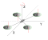

你知道四轴的四个电机转的方向是不一样的吗？
基本结构
四轴利用其复杂的算法控制来弥补其简单的机械结构。
其采用四个旋翼作为飞行的直接动力源，旋翼对称分布在机体的四个方向，一般装成“X”型的或者“十”型（参考配图，来自PX4官网）。

四个旋翼处于同一高度平面，且四个旋翼轴距几何中心的距离相等，其中一个对角逆时针旋转，另外一个对角顺时针旋转，支架中间空间安放飞控、电调和一些外部设备。
运动原理
四轴异常灵活，它能够实现悬停，垂直运动、俯仰运动、滚转运动、偏航运动。下面以PX4的X模式为列子进行说明，图中X轴所指为飞机前方，Y轴所指方向为飞机左侧。
悬停
每个电机带着螺旋桨转动的时候会产生一个向上的提升力以及转动方向相反的反扭矩力，
当两个对角轴产生的反扭矩力（电机1+2 VS 电机3+4）相同时能够相互抵消，这样就能保证航向的稳定。
而在此同时，四个电机产生的向上提升力的总和刚好能抵消飞机本身重力的时候，飞机就能悬停在空中了。
当然在实际场景中，由于周边环境的影响，飞控会实时调整来达到这种平衡状态。
垂直运动
知道了悬停的原理后，垂直运动就很好理解了。
继续保证反转扭矩相互抵消，增加总提升力使其大于重力，就能垂直上升
而减少总提升力使其小于重力，就能垂直下降。
偏航运动
偏航运动和垂直运动类似，只不过偏航的时候是保持总提升力不变，而调整反转扭矩。
保持总提升力与重力相等
当顺时针反转扭矩大于逆时针反转扭矩时（反转扭矩1+2 > 反转扭矩3+4），飞机整体会向顺时针偏航。
而当顺时针反转扭矩小于逆时针反转扭矩时（反转扭矩3+4 > 反转扭矩1+2），飞机整体会向逆时针偏航.

俯仰运动（前后运动）
同时减小1和3电机转速，增大2和4电机转速，飞机就会前俯。前俯的情况下总的提升力不是垂直向上，而是随着飞机的前俯而前俯。这样就会产生一个水平方向向前的分力。保持这种姿势，飞机就会在这个水平力的作用下向前移动。
同理，增大2和4电机转速，减小1和3电机转速，飞机就会后仰。后仰的情况下总的提升力也后仰，产生一个水平方向向后的分力。保持这种姿势，飞机就会在这个水平力的作用下向后移动。
滚转运动（侧向运动）
原理跟俯仰运动类似。
增加电机1和4的转速，减小电机2和3的转速，飞机会往右滚转。保持右倾姿势，飞机就会向右侧移动。
增加电机2和3的转速，减小电机1和4的转速，飞机会往左滚转。保持左倾姿势，飞机会就向左侧移动。
控制方法
那么问题来了，四轴的四个电机之间是如何相互配合进行微妙的动作变化来实现我们想要的运动的呢？
这种问题交给飞行员来手动控制似乎很难，但是如果交给计算机程序自动控制的话，就会相对简单一些。
在四轴上装有3轴陀螺仪和3轴加速度传感器组成的惯性导航模块，飞控可以根据这些传感器返回的数据知道飞行器当前的姿态、加速度、角速度等。飞控通过算法计算评估当前姿态与目标姿态的偏差，再通过这些偏差来修正四个电机的动作。
也就是说，飞行员只要将他想要的四轴整体动作告诉飞控，飞控会结合传感器信息将飞行员命令分解到四个电机。
Comments
There are no comments yet.